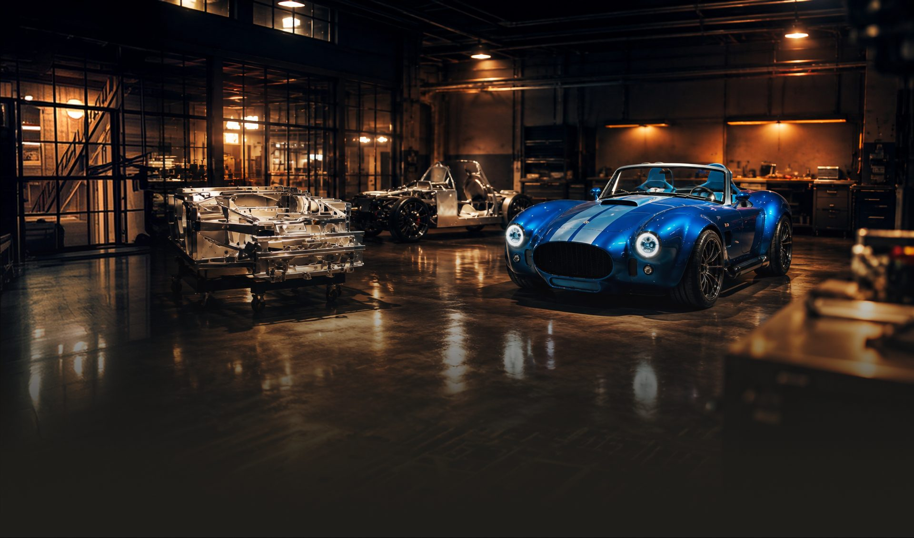

It started out in 1991 as an exciting challenge. One automotive dealership in a small town in Licking County, Ohio.
More than three decades later, we’re still proud to call Heath home, though we’ve grown a bit and evolved into something much greater over that time. What we’ve become was built not only on that history of success but also on a legacy of care for our clients, associates, and community — our family.
What drives us
We know what drives us: the joy of providing people with exciting experiences. That desire has been there since the start of our journey. Today and into the future, you can depend on The Hinderer Motor Company to race to meet people wherever their dreams may take them.
Because we love what moves you.
Contact Hinderer Motor Company
Phone
Address
Hinderer Motor Company1555 Hebron Rd
Heath, OH 43056
Follow